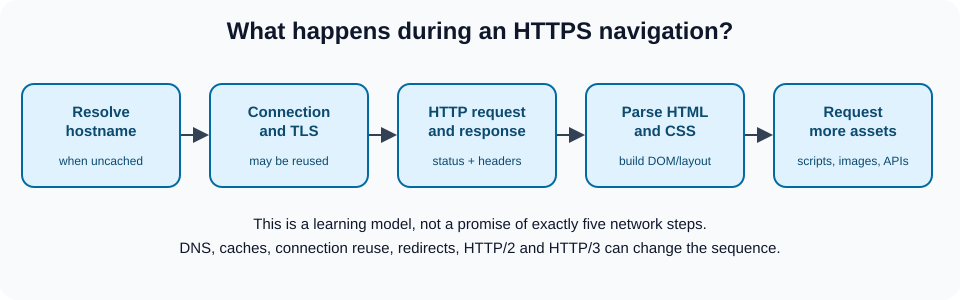

A website on your computer is not automatically reachable by other people. Hosting makes its files or application available over a network; DNS helps browsers find the hostname's destination; HTTPS protects communication between client and server. These are different concerns, and publishing a page requires checking each one.
A domain such as example.com is a human-readable name. DNS resolves that name to records, which can provide an IP address or another hostname. 192.0.2.1 is a documentation-only example address, not a suggested production hosting address. A domain does not itself store your site, and a single domain may resolve to multiple addresses.
A registrar registers names for a renewable term under a registry's rules; registration is not permanent ownership. Check the first-year and renewal price, transfer policy, WHOIS/privacy options where applicable, domain lock, two-factor authentication, and renewal reminders. A low introductory hosting price is not the same thing as a domain registration price.
Providers to compare (listed as examples, not endorsements or verified price offers):
| Provider | Site | Services to check |
|---|---|---|
| Domain.com | domain.com | Registration and hosting; compare separate renewal terms. |
| Bluehost | bluehost.com | Hosting, WordPress and domain options. |
| HostGator | hostgator.com | Shared/VPS hosting and domain options. |
| GoDaddy | godaddy.com | Registration, DNS, hosting and email. |
| Namecheap | namecheap.com | Registration, DNS and hosting. |
The old table displayed unverified starting monthly hosting prices alongside a section about domain registration. Promotions, taxes, renewal costs, term lengths and included features change: obtain current figures from each provider's checkout before making a decision.
Start with a local site containing index.html, styles.css, script.js and any image files. Confirm that each relative URL resolves from the route where it appears. For the repository's visual demo, launch a local server from the repository root:
python3 -m http.server 8000Visit http://localhost:8000/projects/visual-examples/, inspect DevTools → Network, and make sure all local assets return successfully. This tests local serving, not a production deployment. A static host can generally publish this directory without running a Node.js server, but the host must be configured to publish the right path or copy an appropriate dist/ artifact. If links use absolute /assets/... paths and the site is deployed under a subpath, they may fail; test the actual public base URL.
| Step | Artifact or evidence | Failure worth catching |
|---|---|---|
| Build | Generated HTML/CSS/JS when required | Wrong output directory. |
| Preview | Unique preview URL | Missing image or CSS. |
| Interaction | Keyboard + form behavior | Client error hidden by successful HTTP 200. |
| Production | Correct custom hostname | Domain points to older deployment. |
| Monitor | Errors and uptime | Silent failures after release. |
| Rollback | Known working revision | Cannot restore previous artifact. |
Hands-on exercise: deliberately rename styles.css to missing.css in a throwaway copy and inspect the 404. Repair the link, deploy to a preview target you control, and test a direct refresh of any deep route. This is a genuine network behavior change even though the HTML source itself may look unchanged. Reference: MDN publishing your website.
There are different hosting models, and the word managed describes the division of operational responsibility, not necessarily whether a plan is free or whether it runs a particular framework.
A managed provider operates some infrastructure and may supply deployments, TLS certificates, rollbacks, monitoring, backups, or automatic updates. Exactly which responsibilities are included depends on the service and plan. You still own application code, access controls, secret handling, content, and any duties the provider's shared-responsibility terms assign to you.
Advantages: less server administration; integration with Git; sometimes global content delivery, preview environments and support.
Tradeoffs: platform-specific deployment behavior; runtime/build limits; limits or charges for usage; some loss of low-level configuration control. Free tiers may exist but are not universal or guaranteed over time.
Examples:
A static site often needs only built HTML, CSS, JavaScript and image assets. Server-rendered applications or API routes need a platform with a supported runtime. Read the build command, output directory and environment-variable documentation before selecting one.
A VPS provides a virtual machine with an allocated amount of compute, memory and storage. Depending on the provider and plan, you may control the operating system and server software. Isolation and performance depend on the virtualization, host contention, resource limits and configuration; a VPS does not guarantee consistent performance or immunity from neighboring workloads.
Advantages: control over runtime, web server, logging, scheduled jobs and deployment approach; adjustable resources on many platforms.
Tradeoffs: you may be responsible for operating-system patches, user permissions, firewall, TLS renewal, intrusion monitoring, backups and restoration. A VPS is not automatically cheaper than managed hosting once administration time is included.
Examples worth comparing: Vultr, Hostinger VPS, GoDaddy VPS. Review region, bandwidth billing, support, backup/restore, and managed versus unmanaged responsibility for the specific plan.
A deployment may be automatic after configuration or manual. Separate the decision to merge code from the decision to publish it: regulated or high-traffic applications may require approvals, database migrations and a reversible release plan.
Pull request + review
|
Tests / lint / build
|
Deploy preview -> manual smoke test
|
Release approved commit
|
Check live routing, HTTPS and key flows
|
Monitor errors -> rollback or fix forwardStatic-site smoke test: request /, a stylesheet, a JavaScript file, and an image; confirm their status and content type. Check a keyboard-only journey, a narrow viewport, the browser console, an unknown route and a direct reload of a valid deep route. For a server-backed application, add a safe test of its health endpoint and permissions. A green CI check does not prove a domain points to the newest revision: compare the deployed commit or asset hash when supported.
Rollback plan: identify the previous published artifact, who may trigger restoration, whether database migrations are backward compatible, and how to communicate an outage. Rollback of frontend assets alone may not restore compatibility with a changed backend API. Keep secrets in the hosting configuration and rotate them if exposed; removing a leaked secret from the latest commit does not erase it from history or deployed artifacts.
Exercise: describe how you would recover if the homepage loads but all CSS files return 404 after release. Identify the symptom in Network, correct the deployment path, and verify cache headers without assuming a DNS failure. Reference: OWASP deployment and maintenance.
A Git push does not automatically deploy every site: deployment must be configured, and many teams only deploy production from a protected branch after reviews and checks.
dist/; a server application may need an image or executable plus a running process.package.json scripts or the project's README; run its tests and build instead of assuming every repository uses npm run build.Use a domain that you own and have permission to test. The commands below demonstrate a read-only workflow; they do not change production DNS:
# Which nameservers are authoritative for your domain?
dig example.com NS
# Which IPv4 and IPv6 destinations does the resolver return?
dig example.com A
dig example.com AAAA
# Does the www host alias another hostname?
dig www.example.com CNAME
# What does the HTTP endpoint actually return?
curl -I https://example.com/example.com is a documentation placeholder: substitute your actual domain. curl -I sends a HEAD request; a server may not support it even when a GET works, so retry with a normal GET when investigating an unexpected status. The IP alone does not identify which virtual host serves the website: TLS SNI and HTTP Host/authority also matter. For a certificate error, inspect hostname, expiry, chain and provisioning; do not disable certificate validation to make the error disappear.
DNS sequence: the registrar manages the registration, but authoritative nameservers may belong to a different DNS provider. Editing a zone that is not authoritative has no public effect. Cache TTL describes how long resolvers may reuse records; it is not a guarantee that a global change occurs at an exact time. A CNAME is not a general replacement for MX or TXT records. Take a snapshot of the existing zone and check mail records before modifying the apex or nameserver delegation.
Troubleshooting exercise: distinguish these cases: dig returns the old address; dig returns the new address but TLS fails; the homepage loads but the SPA's deep route 404s; the API responds with 403. Each points to a different layer and needs a different fix. See the protocols request diagram.
The record type depends on what your host actually instructs you to configure. Do not invent an IP address or create a conflicting record simply because a tutorial says every deployment needs an A record.
www.example.com) and read the provider's exact DNS instructions.A maps a hostname to an IPv4 address, AAAA maps to IPv6, and CNAME aliases one hostname to another where allowed. Some DNS providers support ALIAS/ANAME or CNAME flattening at the zone apex; these are provider-specific conveniences, not interchangeable standard record types. MX is for mail routing, and TXT commonly conveys verification or mail-policy information; do not overwrite existing mail records when setting up a website.www ↔ apex redirect deliberately. Avoid routing a domain to two unrelated hosting services accidentally.https://.
Practical check: a DNS lookup such as dig example.com A checks an IPv4 response, while dig www.example.com CNAME checks a possible alias. Not every valid site needs both. Then use browser DevTools → Network to inspect the HTTPS request and response; verify that a deep route reloads rather than returning a hosting 404. See the detailed protocols chapter for DNS, TLS, caching and HTTP semantics.
Before changing production DNS: document existing records, reduce the relevant TTL in advance if useful and permitted, identify what can be rolled back, and preserve mail settings. Domain configuration errors can disrupt website or email even when deployment code is correct.
A home server can teach operating systems, networking, and deployment, but it introduces reliability, privacy, and security responsibilities. Prefer a throwaway learning service without personal data before exposing a real application to the public Internet.
| Symptom | Investigate |
|---|---|
| DNS lookup returns the old address | Authoritative nameservers, record and TTL/caches. |
| Domain resolves but connection fails | Host/service availability, routing, firewall, required port. |
| Browser warns about HTTPS | Certificate hostname, expiry, provisioning and redirects. |
Homepage works but reloading /about returns 404 |
Static host routing or SPA fallback configuration. |
| Page loads but API call fails | Browser Network tab, API URL, CORS, authentication and server logs. |
| New CSS does not appear | Deployment artifact, browser/CDN cache, cache headers and versioned assets. |
References: MDN: DNS, MDN: publishing a website, Cloudflare: DNS record types, Let's Encrypt.
{kind=link}